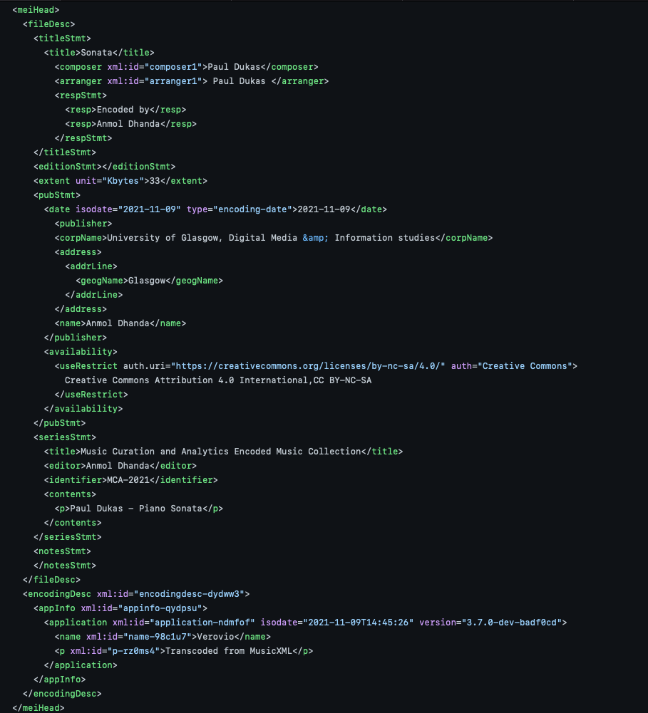

Week 5: Standards in Curation using Metadata
To describe the 1000-song dataset in a meaningful way, I would use these metadata elements:For information regarding the piece:
- Title: name of the piece
- Composer: name of the individual(s) who created the piece
- Arranger: name of the person/people responsible for this particular arrangement of the piece
- Encoder: name of the person/people that encoded the file
- Size: physical size of the file
- Date: date of publication
For information regarding the publication:
- Publisher: name of the individual/organisation responsible for the publication of the piece
- Publisher’s location: address/xity of the publisher
- Copyright Instructions: legal statute of the work regarding its distribution, publication, etc.
For information regarding where the piece is stored (i.e a catalogue or project):
- Series Title: title of the project
- Series Editor: name of individual(s) who edited the project
- Identifier a way to identify said project
- Name: name of the piece within the project
Below are screenshots of the implementation of the metadata.
Week 3
Week 5
The modified MEI file is displayed below using Verovio. It can also be accessed here
Loading Week 5 file...